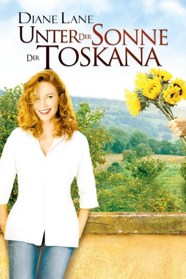
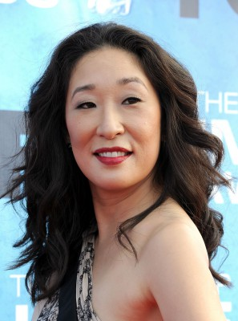

#4947 Unter der Sonne der Toskana
Alternativ: Under the Tuscan Sun
 
 IMDB-Wertung: 6.7 / 10
IMDB-Wertung: 6.7 / 10  Metascore: 0
Metascore: 0 
Drama basierend auf der gleichnamigen Autobiografie von Frances Mayes. Die amerikanische Schriftstellerin Frances lässt sich scheiden, nachdem ihr Ehemann sie betrogen hat. Sie lässt sich daraufhin von einer Freundin zu einer Reise in die Toskana überreden. Dort beginnt sie ein neues Leben.
Jahr: 2003
Dauer: 112 Minuten
FSK: 0
Land: USA Studio: Buena Vista PicturesTonspuren: DD5.1 - ,
Untertitel:
Auflösung: 1080p (1920x1040) Größe: 7331 MB
Genre: Drama, Komödie, Liebe
Regisseur: Audrey Wells
Drehbuch: Benjamin Hessler
Soundtrack:
Darsteller:
 Diane Lane als Frances
Diane Lane als Frances-  Sandra Oh als Patti
 Lindsay Duncan als Katherine
Lindsay Duncan als Katherine Raoul Bova als Marcello
Raoul Bova als Marcello- Mario Monicelli als Old Man with Flowers
- Pawel Szajda als Pawel
- Valentine Pelka als Jerzy
 Claudia Gerini als Signora Raguzzi
Claudia Gerini als Signora Raguzzi- David Sutcliffe als Ed
 Kate Walsh als Grace
Kate Walsh als Grace Don McManus als Nasty Man
Don McManus als Nasty Man Elden Henson als Author
Elden Henson als Author Jack Kehler als Apartment Manager
Jack Kehler als Apartment Manager- Dan Bucatinsky als Tour Member Rodney
 Kristoffer Ryan Winters als David Tour Guide
Kristoffer Ryan Winters als David Tour Guide- Jeffery Jones als Gay Tourist
- Vittorio Pecchillo als Gay Tourist
- Marit Nissen als German Woman
- Ralph Palka als German Man
- Marco Bonini als Dinner Guest
- Emiliano Novelli als Positano Policeman
- Vincent Riotta als Martini
- Roberto Nobile als Placido
- Anita Zagaria als Fiorella
- Evelina Gori als Nona Cardinale
- Giulia Steigerwalt als Chiara
- Sasa Vulicevic als Zbignew
 Massimo Sarchielli als Nino
Massimo Sarchielli als Nino- Laura Pestellini als Contessa
- Matt Salinger als Colleague
- Johnny Radzik als San Francisco Guy
- Geoffrey Rivas als Head Mover
- Sean Kaplan als Seat Mate
- Giuseppe Buondonno als Gay Tourist
- Andrea Saran als Gay Tourist
- Giulia Bernardini als Gay Tourist
- Marco Fubini als Rome Man #1
- Davide Paganini als Rome Man #2
- Pierfilippo Macchiavelli als Rome Man #3
- Nuccio Siano als Gianni
- Malva Guicheney als Gianni's Daughter
- Salvatore Lazzaro als Contractor #1
- Sandro Dori als Contractor #2
- Marcello Marziali als Contractor #3
- Domenico Gennaro als Marcello's Cousin
- Romina Cansanella als Marcello's Niece
- Francesca Petrucci als Choir Singer
- Chiara Porti als Signor Martini's Wife
Datei: X:\2003(N-Z)\Unter der Sonne der Toskana (2003, FSK0, 1920x1040).mkv seit 05.12.2016
Festplatte: HD 2003-2004-2005(A-F)
 Es gibt insgesamt 46 Filme in der Gruppe '2003(N-Z)'
Es gibt insgesamt 46 Filme in der Gruppe '2003(N-Z)'